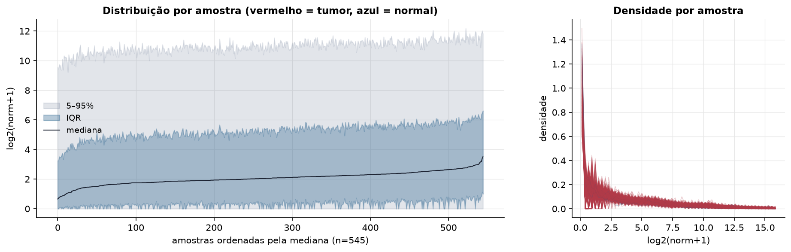
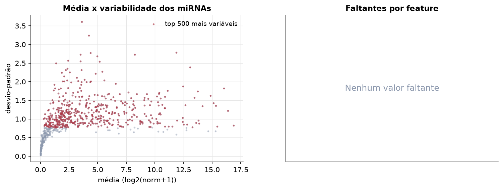
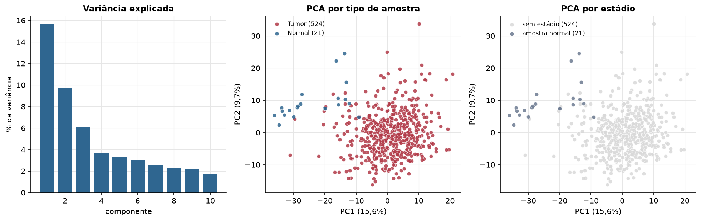
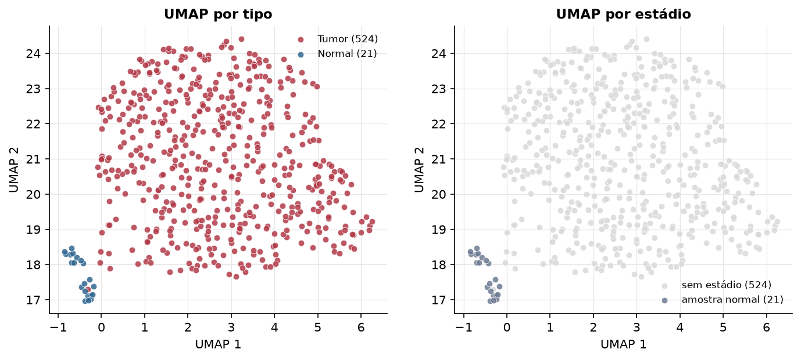
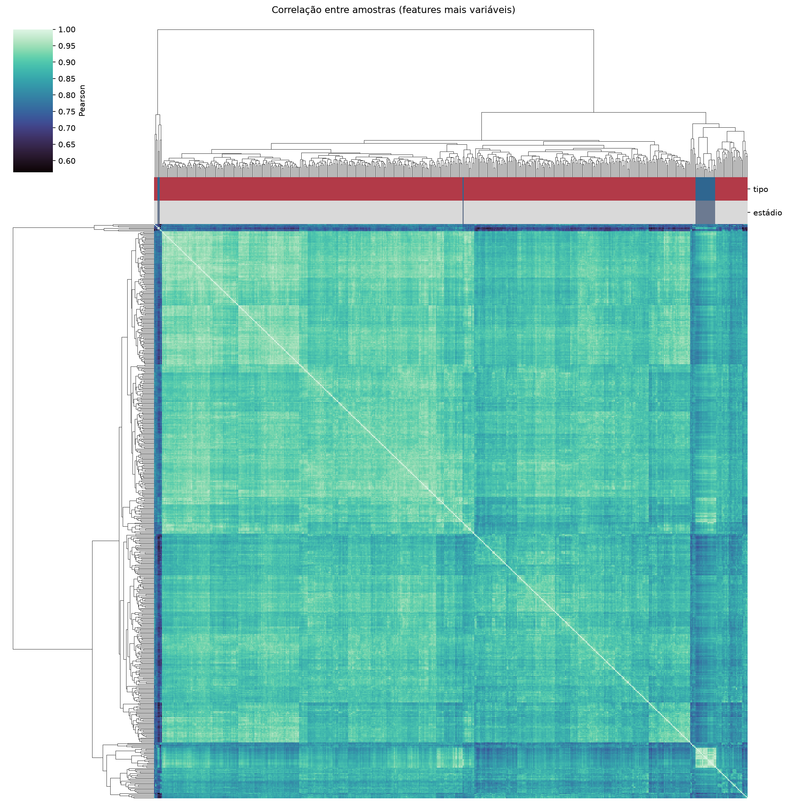
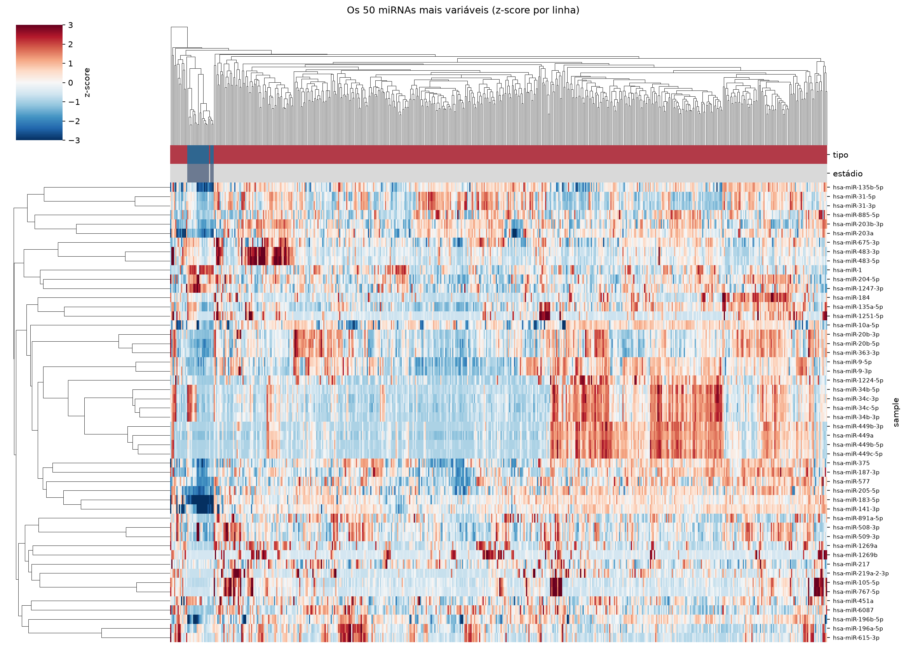
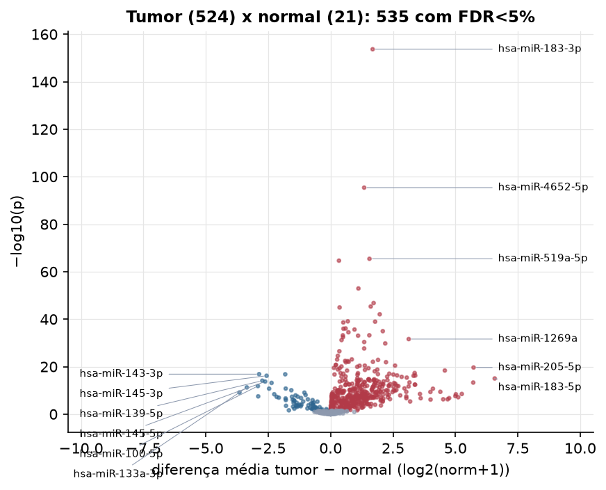
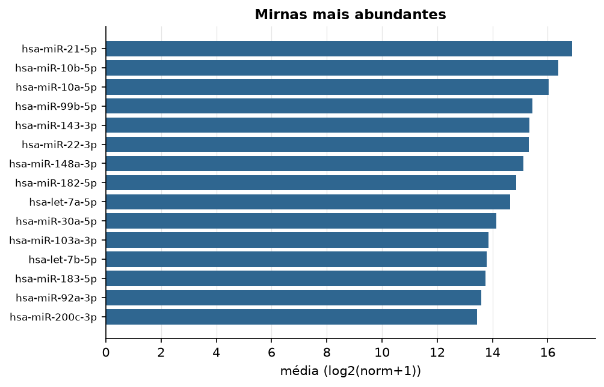

UCEC · miRNA-seq (PanCanAtlas)
miRNA maduro, normalizado e corrigido por lote (EB), log2(x+1) · gerado em 22/10/2026 05:47
743miRNAs
524amostras tumorais
21amostras normais
0,0%valores faltantes
Fonte: PanCanAtlas (pancanMiRs_EBadjOnProtocolPlatformWithoutRepsWithUnCorrectMiRs_08_04_16.xena)
Fita madura (5p/3p) já normalizada. As contagens brutas por precursor estão no relatório de contagens.
Principais resultados
- 743 miRNAs medidos em 545 amostras (524 tumorais e 21 normais); 0,0% dos valores estão faltando.
- Os dois primeiros componentes principais explicam 15,6% e 9,7% da variância das features mais variáveis.
- Correlação mediana entre amostras: 0,89.
- Amostras com correlação muito abaixo das demais (possíveis outliers técnicos): TCGA-A5-A0GH-01, TCGA-E6-A1M0-11, TCGA-EY-A1GM-01, TCGA-FI-A2F9-01, TCGA-AX-A2HC-01, TCGA-FI-A2CX-01, TCGA-A5-A1OH-01, TCGA-AX-A3FZ-01, TCGA-BG-A3PP-11.
- Tumor x normal: 535 miRNAs diferentes com FDR < 5% (456 maiores no tumor, 79 maiores no normal; 20 pacientes têm o par tumor-normal).
- Mais aumentados no tumor: hsa-miR-183-3p, hsa-miR-4652-5p, hsa-miR-519a-5p, hsa-miR-96-3p, hsa-miR-516a-5p, hsa-miR-18a-3p, hsa-miR-7-5p, hsa-miR-4758-3p.
- Mais reduzidos no tumor: hsa-miR-143-3p, hsa-let-7c-5p, hsa-miR-145-3p, hsa-miR-139-5p, hsa-miR-145-5p, hsa-miR-99a-5p, hsa-miR-100-5p, hsa-miR-133a-3p.
- Associações clínicas com p < 0,05 nos componentes principais: PC1 com idade (p=0.03); PC2 com idade (p=0.00073); PC3 com idade (p=2e-09); PC3 com sobrevida (p=2.4e-06).
Distribuição dos valores


Estrutura das amostras




Tumor x normal

Features mais diferentes entre tumor e normal
| sample | diferenca_tumor_menos_normal | t | p | fdr |
|---|---|---|---|---|
| hsa-miR-183-3p | 1.684 | 40.719 | 2.08e-154 | 1.54e-151 |
| hsa-miR-4652-5p | 1.344 | 25.885 | 3.95e-96 | 1.47e-93 |
| hsa-miR-519a-5p | 1.556 | 20.045 | 3.76e-66 | 9.32e-64 |
| hsa-miR-96-3p | 0.334 | 19.768 | 2.25e-65 | 4.19e-63 |
| hsa-miR-516a-5p | 1.113 | 17.286 | 1.18e-53 | 1.75e-51 |
| hsa-miR-18a-3p | 1.723 | 30.361 | 1.6e-47 | 1.98e-45 |
| hsa-miR-7-5p | 1.608 | 25.104 | 4.55e-46 | 4.83e-44 |
| hsa-miR-4758-3p | 0.359 | 15.641 | 1.15e-45 | 1.07e-43 |
| hsa-miR-877-5p | 1.968 | 30.804 | 8.87e-43 | 7.32e-41 |
| hsa-miR-6720-3p | 0.689 | 14.349 | 8.07e-40 | 5.99e-38 |
| hsa-miR-4724-5p | 1.783 | 23.315 | 1.13e-39 | 7.6e-38 |
| hsa-miR-18b-3p | 0.508 | 14.54 | 2.42e-39 | 1.5e-37 |
| hsa-miR-155-3p | 0.601 | 15.876 | 8.14e-37 | 4.65e-35 |
| hsa-miR-522-3p | 0.514 | 13.696 | 1.04e-36 | 5.54e-35 |
| hsa-miR-3648 | 0.958 | 17.435 | 2.34e-36 | 1.16e-34 |
| hsa-miR-4746-5p | 2.09 | 30.584 | 1.12e-35 | 5.22e-34 |
| hsa-miR-138-5p | 0.713 | 14.043 | 3.28e-35 | 1.43e-33 |
| hsa-miR-937-3p | 1.55 | 20.848 | 6.17e-34 | 2.48e-32 |
| hsa-miR-3161 | 0.49 | 13.021 | 6.35e-34 | 2.48e-32 |
| hsa-miR-3131 | 1.1 | 14.619 | 8.9e-34 | 3.31e-32 |
| hsa-miR-519a-3p | 0.497 | 12.847 | 3.63e-33 | 1.28e-31 |
| hsa-miR-1269a | 3.129 | 15.743 | 2.47e-32 | 8.34e-31 |
| hsa-miR-489-3p | 0.438 | 13.946 | 6.36e-32 | 2.05e-30 |
| hsa-miR-7706 | 1.345 | 24.245 | 4.24e-31 | 1.31e-29 |
| hsa-miR-20b-3p | 2.188 | 19.284 | 1.66e-30 | 4.93e-29 |
| hsa-miR-1269b | 1.344 | 11.724 | 2.22e-28 | 6.34e-27 |
| hsa-miR-7974 | 0.35 | 12.504 | 3.26e-27 | 8.97e-26 |
| hsa-miR-1283 | 0.289 | 10.955 | 2.77e-25 | 7.34e-24 |
| hsa-miR-3687 | 0.85 | 13.535 | 9.04e-24 | 2.32e-22 |
| hsa-miR-6510-3p | 0.261 | 10.731 | 9.99e-24 | 2.47e-22 |
Associação com variáveis clínicas
p-valores da associação dos três primeiros componentes principais (só tumores) com estádio (Kruskal-Wallis), sexo (Mann-Whitney), idade (Spearman) e sobrevida global (Cox univariado).
| estádio (Kruskal) | sexo (Mann-Whitney) | idade (Spearman) | sobrevida OS (Cox) | |
|---|---|---|---|---|
| PC1 (13,0%) | 0.03 | 0.63 | ||
| PC2 (9,0%) | 0.000725 | 0.18 | ||
| PC3 (6,6%) | 2.01e-09 | 2.45e-06 |
Mais abundantes
